Start with an idea
“What if we bought Anthropic?” Share it with the group. Protoss helps turn it into something each friend can review.
Next: look at the idea
Share a trading idea in your group. Everyone chooses their own amount, approves from their own wallet, and keeps their own position.
The practice demo uses simulated money. Real trades require a configured live flow and your approval.
Scroll to follow an idea ↓
“What if we bought Anthropic?” Share it with the group. Protoss helps turn it into something each friend can review.
Next: look at the idea
Explore a backtest, or review the current market quote. Check the data source, fees and risks. A past result is never a promise.
Next: choose your amount
You might choose $20. Your friend might choose $50. Each person reviews their own request; the money is never combined.
Next: approve and verifyIn the wallet-review flow, you approve your own order. Protoss checks the exchange and reports what actually filled, including partial fills.
Try the steps with practice money
The Probe thinks while a backtest runs, talks as an idea is shared, and checks in when a result arrives.
A quiet hover while you choose an idea.
Download SVGChecking the strategy and available data.
Download SVGA conversation between friends.
Download SVG
Waiting for the wallet or exchange.
Download SVGThe result has arrived. The figures tell the rest.
Download SVG
Protoss connects the conversation to the trade. Markets shown are perpetual contracts: an Anthropic-linked contract is not a share of Anthropic. Each person decides whether to participate.
Open Protoss